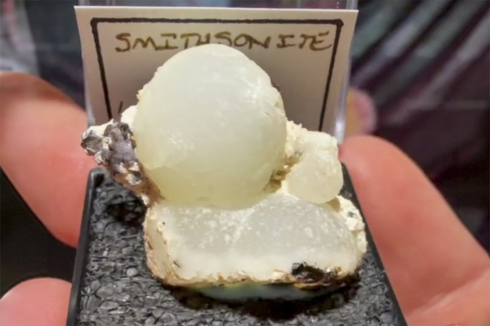

Smithsonite
"White Smithsonite Ball TN"
V-10870
Lavrion Mining District, Lavreotiki, East Attica, Attica, Greece
Purchased 8/16/2026 from MinCollect for $49.36
Core Collection • Received
Details
Storage Type: Unassigned
Storage Location: 000 None
Size class: Cabinet (0)
Dimensions: 0.6 × 2.9 × 1.4 cm
Mass: 14.91 g
Luster: Above Average, Matte